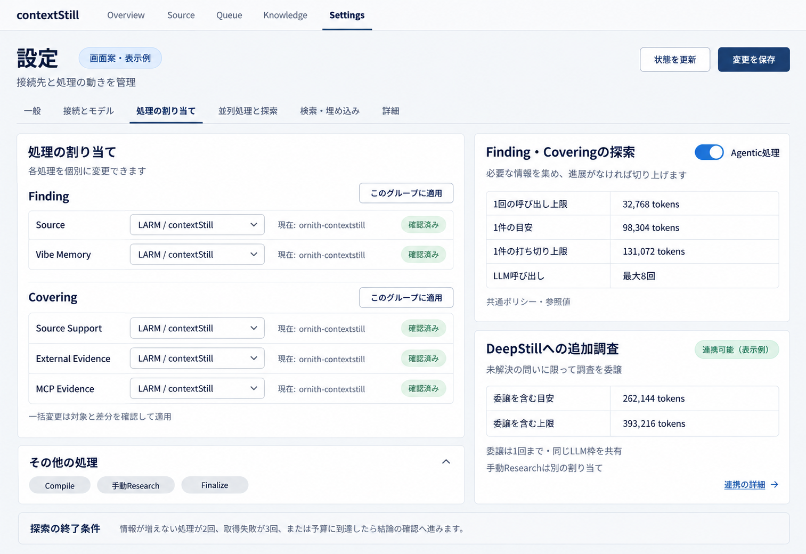

2026年10月4日。第3案に基づく設定画面の実装は完了した。最終の保存・状態表示・項目移行・検証範囲は設定画面の契約と完了記録を正本とする。本書の生成画像は採用時の画面案として保存している。
接続、処理の割り当て、同時実行、探索方針を同じ設定画面で把握できるようにする。LARMが返すモデルと容量は参照表示にし、ContextStillで変更できる項目だけを入力欄にする。既存の白・紺を基調とした画面構成を継承する。
第3案はユーザー採用済み。実装順序・個別保存の契約・既存機能の移行・レガシー画面削除は設定画面の刷新・レガシー画面削除 実装計画に定める。実装は完了し、計画書はArchiveへ移した。実装済み画面と検証結果は現行contractを参照する。


画像は組み込みimage_genで作成した。正確な設定項目・状態・適用条件は以下の本文を正本とする。生成に使用したプロンプトも保存した。現在の接続画面とモーダルには第3案のプロンプトを使用した。
| 項目 | 確認した実装 | 必要な修正 |
|---|---|---|
| 4並列の上限 | バックエンドにはmaxConcurrentRequestsがあり1〜4を受け付ける。画面とフロントエンドのLarmAgentConnectionSettings型には項目がない。接続オブジェクトは展開してコピーしており、この項目が常に保存時に消えるとまでは判断しない。 | 設定上限・LARM公開上限・実効上限・使用中の数を分けて表示する。 |
| タイムアウト・TTL | 画面のrequestTimeoutMs入力は240,000msまでに制限し、編集時もその値に丸める。バックエンドは3,600,000msまで対応。画面での新規接続はTTL300秒・タイムアウト240秒で作成され、TTLは読み取り専用。スキーマのデフォルトはTTL900秒・タイムアウト300秒。 | 共通スキーマから範囲と初期値を取得し、秒単位で表示する。TTLはタイムアウト＋30秒以上を同時に検証する。 |
| 新しい設定の保存 | settings-form.tsはadvancedを明示的に作り直しagentRuntimeを含めない。保存処理は送信された設定を解析してドキュメント全体を置換し、現在値とはマージしない。新しいAgentRuntime設定が欠落する保存経路がある。 | agentRuntime.enabled・researchと認証参照を型、表示、保存で一貫して維持する。未編集項目の保持を先に直す。 |
| Finding・Coveringの割り当て | Findingの1行を変更するとsourceとvibeを同じ値にする。Coveringの1行を変更するとsourceSupport・externalEvidence・mcpEvidenceを同じ値にする。 | 5つの値を個別に編集する。一括変更は対象と差分が見える明示操作にする。 |
| 接続状態 | larm-status.tsは最初のConnectionだけを参照する。LLMが再接続中でも別のローカルモデルのhealthが成功するとready/Macへ変更する。各Connectionのclaim済みモデルや容量の表示には使えない。 | 接続IDとProviderごとの観測状態を返す。別経路のhealthをLARM接続の利用可能状態に代用しない。 |
| 未保存の実行先プレビュー | settings-controls.tsxはproviderPoolIdの一致で保存済みeffectiveTargetsを再利用する。Dynamic routeでは双方undefinedになり、別の選択に保存済みの実行先が表示される可能性がある。 | 選択中の割り当てと、保存済み設定から実際に確認した実行先を別に表示する。観測には設定revision・route・Connectionの対応を持たせる。 |
| 探索予算 | Agentic処理のWindow・出力・総予算・呼び出し回数はRust側の共通ポリシーで決まる。一方、画面には従来のFind Candidate RuntimeやdistillationRuntimeの入力が残っている。 | Agenticに効く共通ポリシーを参照表示し、従来項目には実際の適用先を明記する。同名の旧項目を新処理の設定として流用しない。 |
| タブ | 内容 |
|---|---|
| 一般 | 取り込み、通常のアプリ設定。今回の変更と無関係な項目は維持する。 |
| 接続とモデル | 設定済みプロバイダー一覧を先頭に置く。Azure OpenAI・OpenAI・Bedrock・固定エンドポイント・LARMを一覧から追加・選択・編集する。LARMの公開Providerは、その接続を選択した詳細内で表示する。 |
| 処理の割り当て | すべての既存task routeを保持する。FindingとCoveringは個別の行。Compile、手動Research、Finalize等は折りたたみ可能な別グループにする。対応していない実行先は理由付きで選択不可にする。 |
| 並列処理と探索 | Connectionごとの共有枠、Finding・Covering共通ポリシー、DeepStill自動委譲を扱う。固定ProviderのPool設定は別セクションとして残す。 |
| 検索・埋め込み | 検索サービスの順序・認証、Embeddingの実際の接続方式・モデル・dimensionを表示する。LARM公開カタログにあることだけでEmbeddingが稼働中とは表示しない。 |
| 詳細 | 待機・通信タイムアウト、TTL、Queue間隔、診断等。通常操作に不要な契約・接続識別情報は折りたたむ。 |
既存の設定タブURLは新しい対応先へ移行し、ブックマークを維持する。狭い画面ではカードを縦に並べ、表の各行を用途・選択・観測の組で表示する。現在の主要ナビゲーション項目は削除しない。画像の上部ナビゲーションは簡略表示である。
「接続とモデル」の入口はアプリに登録した接続の一覧とする。Cloud APIを「その他の接続」にまとめて隠さない。LARM公開カタログに含まれるProvider一覧とは別の一覧であり、LARMのllm・system-one・embeddingをアプリ登録接続として自動追加しない。
一覧の列は名前、種類、モデル／Deployment、認証状態、接続確認、操作。操作列には「接続を確認」「編集」を置く。割り当ての詳細は選択行の下部に表示する。Azureの各Deployment、固定エンドポイントの各モデル、各LARM Connectionを別の行にする。OpenAI・Bedrock・Codex SDKの既存設定と認証操作も維持する。画像は代表6行を表示しており、実装時にCodex SDKを削除しない。未割り当て・無効な登録も一覧に残し、空の初期値を設定済みと表示しない。
「プロバイダーを追加」は新規登録モーダルを開き、種類を選ぶと対応するフォームを表示する。各行の「編集」は更新モーダルを開く。Azure・固定エンドポイント・LARMは既存の複数登録契約を維持する。現行OpenAI・Bedrockは単一設定なので、登録済みの場合はその設定の編集へ案内する。複数登録に対応していない型に追加の行だけを見せない。
| 種類 | 接続・モデル設定 | 認証設定 |
|---|---|---|
| Azure OpenAI | 表示名、Endpoint、Deployment／Model、API Version。API Pathは詳細に配置。複数Deploymentをそれぞれ編集する。 | 専用API Keyの登録・変更・明示的な解除。現行の共通キー継承を維持し、専用キーと共通キーのどちらを使うか表示する。 |
| OpenAI | API Base URL、Model、有効状態。 | API Keyの登録・変更・明示的な解除。 |
| AWS Bedrock | Region、AWS Profile、Model、有効状態。 | 現在のAWS認証取得元と状態を表示する。既存契約にないAPI Key入力を追加しない。 |
| 固定エンドポイント | 表示名、API Base URL、API Path、Model。既存の複数モデル登録を維持する。 | 必要な接続だけAPI Keyを登録する。未設定が許容される接続では認証未設定を接続エラーと決めつけない。 |
| LARM | 接続名・制御API URLを編集し、Profile・公開Provider・claim結果を詳細表示する。 | 制御API認証の設定／取得元。返却Providerの短期credentialは入力欄にしない。 |
| Codex SDK | 既存の有効状態・Model設定を維持する。 | 既存のログイン・認証状態確認を維持する。 |
API Keyは入力を空にしただけでは削除しない。「登録済みのキーを保持」「新しいキーに変更」「解除」を区別する。キー本文を一覧へ返さず、登録状態と取得元だけ表示する。編集したEndpoint・Model・認証と保存済みの接続確認結果が異なる場合は「変更後は未確認」とする。Cloud APIの確認済みは対象Endpoint・Model・認証での確認成功を示し、Queueで使用中の意味にはしない。
API接続確認は明示操作であり、API要求が発生することを表示する。テーブルの「接続を確認」は保存済み設定を使う。モーダルの「入力内容で接続を確認」は未保存のdraftを使い、その結果はモーダル内に表示する。draftの結果で保存済み接続の確認結果を上書きしない。認証の保存と一時的な接続確認を混同しない。
既存の有効状態はProvider種類全体にある。初期実装では「Azure OpenAIを有効」など適用範囲を明記し、選択行だけの切り替えに見せない。行ごとの有効化を追加する場合は設定スキーマと実行側を先に拡張する。表示名のない種類は固定名を使い、対応する保存項目を追加するまでは編集可能にしない。
削除・種類変更で割り当てを別接続に移さない。参照されるroute・Poolを表示し、参照解消または明示した置換と一緒に保存する。Azureの配列slot削除では後続のrouteとsecret参照を同じ接続に保つ。安定IDへ移行する場合は既存slotと認証の対応を維持する移行処理を含める。
一覧からLARMを選ぶと公開Provider・実利用・4枠・Windowを下部に参照表示する。Cloud APIにLARMの32Kや4枠を自動適用しない。モデル・認証・接続先の入力欄はモーダルに置く。画面は白・紺を基本に、一覧・選択詳細・編集モーダルを共通化する。
全体のダッシュボードを増やさず、選択したプロバイダーの参照情報を3つの領域にまとめる。行を選択すると内容を切り替え、選択対象と観測時刻を見出しに表示する。行のテスト・編集ボタンは行選択と別操作とし、押した行を必ず対象にする。
接続設定がある場合は先頭または直前の選択を初期表示する。選択中の接続が削除されたら次の行へ移り、古い情報を残さない。登録0件なら追加への案内だけを表示する。狭い画面では3領域を縦に並べる。カタログの公開ProviderはLARM利用状況内の詳細として展開し、設定済みプロバイダー一覧と混ぜない。
フォーム、検証、認証変更、詳細設定は1つの共通モーダルに集める。新規登録は種類を選択できる。更新では種類を参照表示にし、種類変更が必要なら割り当てを伴う別の明示操作として扱う。入力項目は種類ごとに切り替え、各Providerの既存契約に対応させる。API Key変更を選んだときだけ入力欄を出し、登録済みキーをフォームへ戻さない。
新規の主操作は「登録」、更新は「保存」。対象の接続設定と認証変更だけを保存し、成功したらモーダルを閉じて一覧を再取得し、追加・更新した行を選択する。キャンセルは保存しない。接続テスト成功を登録・保存の必須条件にしない。保存失敗や競合はモーダル内に表示し、入力を維持する。保存中の連打を防ぎ、キーボードのfocusをモーダル内に保ち、閉じたら起点のボタンへ戻す。
プロバイダーの保存を全画面の一括保存と二重にしない。「接続とモデル」のヘッダーには状態更新のみを置く。他タブの未保存変更をモーダルの保存に含めず、後から他タブを保存しても更新済みProviderを古いsnapshotで戻さない。実装には対象差分とrevisionによる保存契約が必要であり、現行の全設定置換APIを古いフォームsnapshotのまま呼ぶだけでは対応できない。競合時は他の設定を保持した再読込・差分再適用を行う。認証変更が部分成功した場合も全体成功と表示しない。
削除は誤操作を避けるため行の補助メニュー、または編集モーダルの別セクションに置く。参照中の処理と置換先を確認してから実行する。編集ボタン・接続テストボタンを削除ボタンの隣に密集させない。
各行の「接続を確認」はその行の保存済み接続・モデル・認証を対象にする。実行中は「確認中」、LLM枠待ちなら「枠待ち」と表示し、同じ対象の二重実行を防ぐ。成功・失敗は接続確認列に短く出し、選択すると下部の結果を見られる。通常の状態更新では推論テストを行わない。
結果は対象ID、保存revision、接続先・モデル・認証バージョンに結び付け、保存中の変更と古い結果の競合を防ぐ。試験途中の設定更新後に旧設定の成功を新設定の確認済みとして採用しない。Codex SDKは既存の認証確認契約に合わせ、必要ならラベルを「認証を確認」とする。Cloudの疎通、推論、認証確認など、何を確認したかを結果に残す。
LARMは保存設定と一致する採用済みConnectionが使える場合、native側のProvider管理器と共有permitを通して推論を試す。実効4枠を使い切っているときにテストを5本目として送らない。一致する接続がなければ共通手順で専用試験Connectionを作り、終了・失敗・取消時に解放する。試験の終了で通常QueueのConnectionを解放しない。いずれもallowFallback=false・existing-onlyを維持する。
公開カタログ、Connectionが要求したProvider、claimして実際に利用しているProviderを区別する。キュー用Connectionはproviders=[llm]なので、公開されているsystem-one・embeddingを自動で要求したり、利用中と表示したりしない。別のEmbedding接続が利用している場合はその接続を明示する。
| 情報 | 扱い | 情報源 |
|---|---|---|
| Connection名・接続先・アプリ上限 | 編集可能。アプリ上限1〜4。 | Consumerの保存設定。 |
| 要求Profile | contextStillを固定表示。識別子の大小文字を維持する。 | 共通接続手順。 |
| 解決Profile・公開Provider | 参照表示。現時点の例はcontextstill-background、ornith-contextstill、laya-multilingual、multilingual-e5-small。 | GET /v3/agent-profiles?profile=contextStillの応答。確認時刻を付ける。 |
| 利用モデル・推論URL・期限 | 参照表示。公開カタログとclaimの結果が異なれば両者を区別する。 | 該当Connectionのclaim descriptorとConsumerが採用した実行lease。 |
| 認証 | 登録状態・取得元・エラーのみ表示。制御APIの認証登録に必要な保存契約を追加する。 | 現行のLARM_API_TOKEN等の実際の取得元。OS認証ストアの参照を使う場合は専用APIを整備する。 |
| LARM容量・Context Window | 参照表示。ContextStillではモデル選択・物理KVキャッシュ・配備設定を編集しない。 | 公開healthと採用したProvider descriptor。 |
claimで返るcredential.tokenは入力欄にも設定ドキュメントにも出さない。URL・model・credentialはConsumer内部で一組として更新する。allocationId、Connection ID、catalogRevision、audienceは必要時だけ接続の詳細に出す。API tokenが取得できない状態と、登録済みで接続確認に成功した状態も分ける。
「状態を更新」は観測のみでConnectionを作らない。明示的な「接続を確認」は採用済み接続と共有permitを使い、保存設定と一致する接続がない場合だけ共通手順のdiscovery→create→ready→claim→試験→releaseを専用Connectionで行う。allowFallback=false・existing-onlyを維持する。状態更新に再接続やモデル切り替えを混ぜない。
実効上限はmin(Consumer設定上限, LARM公開maxConcurrentRequests)。公開容量が省略された場合は1を適用し、「容量未公表・1で処理」と表示する。接続が利用不可なら設定上の容量と実際に利用可能な枠を分ける。4は1つのLLM Connectionで同時に送れる要求数であり、4モデルや4つのConnectionではない。
異なるQueueを優先し、他Queueの仕事がなければFinding・Coveringの別ジョブで空き枠を使う。DeepStillからの推論も同じpermitを使う。使用中の表示は待機中のQueueジョブ数ではなく、現在LLM要求に割り当てているpermit数とする。I/O待ちで解放した枠は使用中に数えない。
固定ProviderのPoolは複数の実行先候補と順序を管理する既存概念として維持する。LARMの共有枠と同じ設定には統合しない。ローカルモデル名やcoding-defaultの固定ラベルをLARMの返却モデルに流用しない。
| 範囲 | 現在の実装値 | 画面での説明 |
|---|---|---|
| 1回の要求上限 | min(ProviderのmaxTokens, Consumer上限32,768)。Provider省略時も32,768。 | 入力・出力・安全余裕を含む。探索全体の累計とは分ける。 |
| 出力 | Finding・Coveringは8,192。Provider出力予約4,096の場合も8,192を確保。 | 実際の要求出力とProviderが示す最低予約を区別する。 |
| 安全余裕 | max(ProviderのsafetyMarginTokens, 4,096)。 | 現在の例では4,096。 |
| 入力の推定上限 | 現在の例は32,768 − max(8,192, 4,096) − 4,096 = 20,480。 | 資料本文だけのトークン数ではない。プロンプト・スキーマ・framingを含む入力の概算許容量。 |
| 通常の1件の探索 | 目標98,304、hard131,072、LLM最大8回。最終確認用に32,768を留保。 | 目安に到達、または探索の呼び出し6回で最終確認へ進む。8回すべてを自由な追加探索に使えるわけではない。 |
| DeepStill委譲を含む1件 | 目標262,144、hard393,216。 | 通常探索と委譲を含む共通の総予算へ切り替える。別枠を足し合わせる表示にしない。 |
送信前の入力値はUTF-8 JSON byte数＋messageごとのframing余裕256による推定であり、実tokenizerでの計測ではない。表示に「概算」を付け、実際のusageと混ぜない。usageがないときは予約を保持する。cached inputは別項目であり、Context Windowから差し引ける空き容量として扱わない。
上記の予算は現段階では共通ポリシーの参照値として表示する。予算を編集可能にする場合は、Rust・TypeScript共通の設定スキーマ、検証、保存、実行時反映を先に追加する。内部のHARD_WINDOW定数36,864を現在利用可能なWindowとして表示しない。実際のcapability生成は32,768に制限するため、現行Providerが32Kなら「多少超えてもよい」という以前の意図をそのままUIに出せない。
設定画面には「最近の処理を見る」への導線を置く。Queueの1ジョブ詳細には、最大の1回分の入力usage＋出力usage、各要求のWindow予約、LLM呼び出し数、1件の総使用量、cached input、停止理由を別々に表示する。1件の累計をContext Window使用量として見せない。情報不足はゼロ扱いせず未取得にする。
Agentic処理の有効化はadvanced.agentRuntime.enabledに結び付ける。現在の停止方針は情報増分なし2回、取得失敗3回、予算目標または呼び出し回数による最終確認への移行。Knowledge lookupは2回まで、DeepStillへの委譲は1回まで。重複取得・問いの範囲・取得結果の根拠検証は共通ランタイムで扱う。停止は未検証の候補を採用する意味ではなく、最終検証と未解決事項の記録につなげる。
自動DeepStill連携はresearchオブジェクトの有無と実際の接続能力を表示する。独立したenabled設定がないため、新たなオン・オフスイッチだけを追加しない。「連携を設定」ではbaseUrl・gatewayUrlと専用の認証参照を扱い、「連携を外す」でresearchをnullにする。現在のURL契約はHTTPのloopback限定であり、認証キーは委譲先とgatewayで別にする。入力を受け付ける型とRust側の検証の差は共通スキーマに寄せて解消する。
手動Researchは独立したtask routeを残す。自動委譲が同じLARM permitを共有することと、手動Researchの割り当てを同一視しない。未設定・未確認・連携可能・調査待ち・連携エラーを区別し、オブジェクトが存在するだけで連携可能と表示しない。
web/src/modules/admin/components/settings/provider-endpoints-panel.tsx：LARM新規接続、タイムアウト入力、汎用status取得。
web/src/modules/admin/repositories/admin/settings-contracts.ts、web/src/modules/admin/components/settings/settings-form.ts：Connection型、advancedの保存変換。
web/src/modules/admin/components/settings/task-routing-settings-panel.tsx、settings-controls.tsx：グループ上書き、実行先表示。
src/modules/settings/settings.types.ts、settings.service.ts、settings.defaults.ts：保存契約、検証、ドキュメント置換。
api/modules/queue/larm-status.ts：最初のConnection参照とローカルhealthの代用。
crates/context-stilld/src/domains/agent_runtime/budget.rs、measurement.rs、engine.rs、config.rs：予算、概算、終了条件、連携契約。